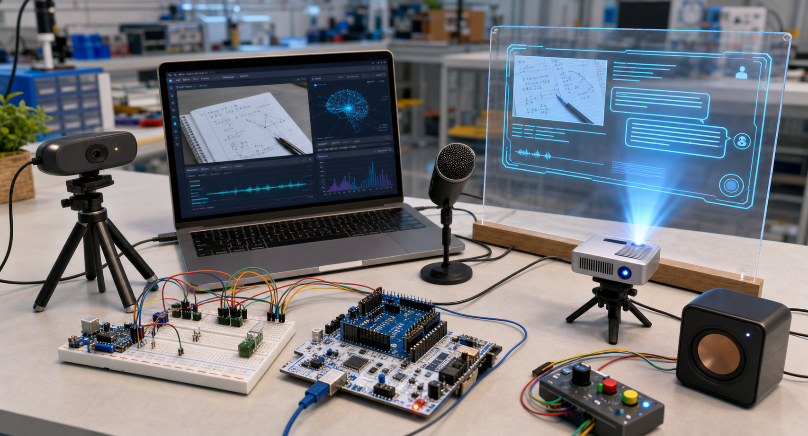
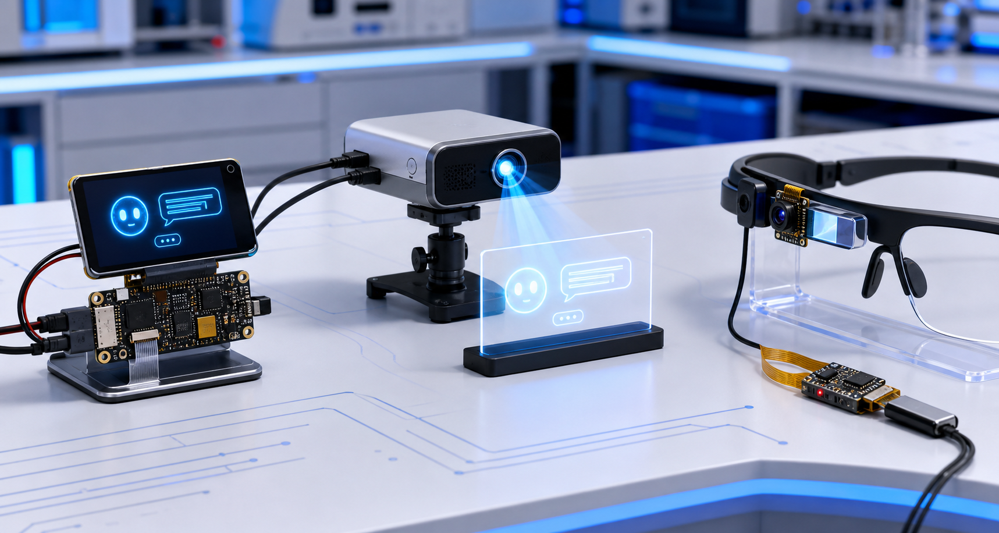
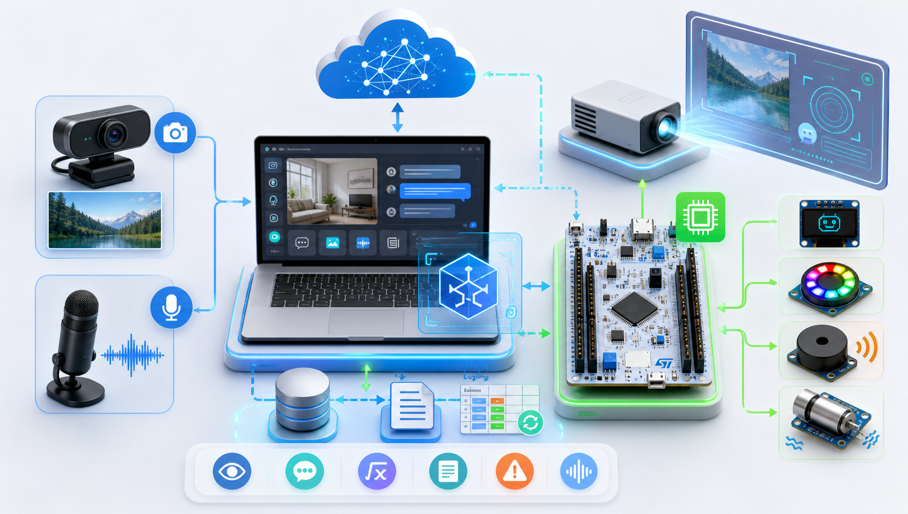
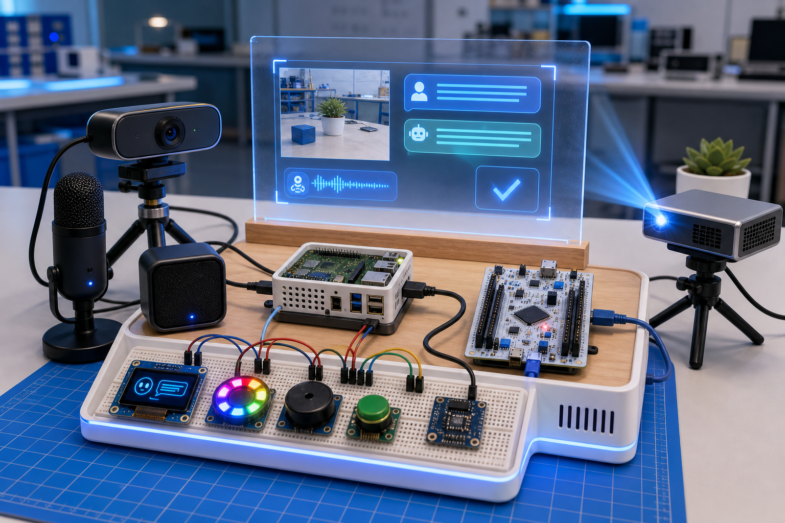
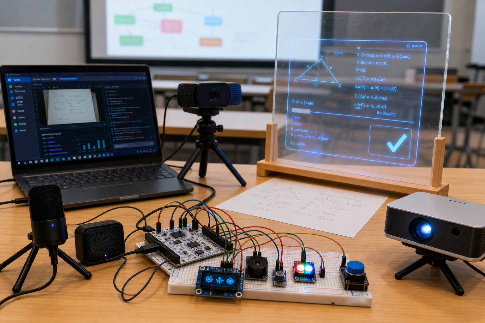

第一阶段：Windows 电脑 + NUCLEO 原型机
Windows 电脑负责 C++主程序、摄像头、语音、日志、网页 UI 和千问 API； NUCLEO 负责 OLED、LED、蜂鸣器、按键和震动反馈。这个阶段最适合快速完成 C++大作业主体和硬件闭环。
AI Reality Bridge / 视觉 + 语音 + 投影原型
当前阶段不强行做成眼镜外形，而是用桌面原型先跑通核心能力： 第一阶段先用 Windows 电脑运行 C++主程序和网页展示，接入 C270 摄像头、千问 API 与 NUCLEO。 等电脑原型机稳定后，再把主程序迁移到 Raspberry Pi，实现脱离电脑运行。

Windows 电脑负责 C++主程序、摄像头、语音、日志、网页 UI 和千问 API； NUCLEO 负责 OLED、LED、蜂鸣器、按键和震动反馈。这个阶段最适合快速完成 C++大作业主体和硬件闭环。

OLED 屏最简单但展示感弱；小投影或透明亚克力 HUD 更有“智能眼镜对话浮层”的感觉； 近眼 micro-OLED 最高级，但采购和光学调试难度明显更高。

摄像头和麦克风采集输入，Windows 电脑上的 C++程序负责 UI、面向对象任务调度、审计日志和千问 API 调用， NUCLEO 负责按钮、状态灯、蜂鸣器、震动和 OLED 反馈。

当 Windows 原型稳定后，再把电脑端 C++主程序迁移到 Raspberry Pi。 这样上台展示时可以把 Raspberry Pi 和 NUCLEO 藏进底座里，实现更独立的设备形态。

这是第一阶段更推荐的答辩展示形态：Windows 电脑运行 C++主程序，C270 读取题目或桌面画面， NUCLEO 控制反馈模块，投影/HUD 展示 AI 的画面描述、解题提示和风险确认结果。
真实开发中由 C++ OpenCV 获取摄像头帧，并保存或编码为图片发送给视觉 AI。
{
"scene": "waiting",
"risk": "unknown"
}
[serial] waiting...
// 中文注释：按键触发后，PC端 C++采集图像
cv::VideoCapture camera(0);
cv::Mat frame;
camera.read(frame);
cv::imwrite("scene.jpg", frame);
// 中文注释：同时采集语音问题，例如“这道题怎么解？”
std::string question = audio.captureText();
// 中文注释：调用千问视觉/Omni API 后，解析结构化结果
if (result.type == "problem_solving") {
projector.show(result.answer);
serial.write("LED:BLUE;BUZZER:OFF");
} else if (result.risk == "high") {
serial.write("LED:RED;BUZZER:ON;VIB:ON");
}